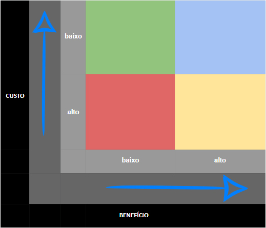

Priorização
1. Introdução
A priorização é uma técnica de elicitação de requisitos que consiste em ordenar os requisitos de acordo com a importância que eles possuem para o usuário. Essa técnica é utilizada para que os requisitos mais importantes sejam implementados primeiro, e assim, o usuário possa utilizar o sistema com mais facilidade e rapidez. O id dos requisitos foi adicionado nas tabelas: 01 para requisitos elicitados a partir das entrevistas, 02 para requisitos elicitados a partir da observação e 03 requisitos elicitados a partir da priorização.
2. Técnicas utilizadas
A priorização foi realizada através de três técnicas: Custo x Benefício, BASICO e MOSCoW. As técnicas escolhidas foram selecionadas pois são simples de avaliar os requisitos e não precisam de um cliente para serem priorizados.
A seguir, serão apresentadas as técnicas utilizadas e os requisitos priorizados. Os requisitos utilizados são especificados na seção #4 página de Entrevistas.
2.1. BASICO
A Matriz BASICO costuma ser usada para auxiliar em decisões importantes. Por meio de uma escala de notas de 1 (pior cenário) a 5 (melhor cenário), qualquer pessoa consegue mapear tarefas e ações por prioridades. O nome desse método de priorização tem relação com a inicial de cada critério que é preciso considerar para a pontuação, como:
- Benefícios para a empresa;
- Abrangência dos resultados;
- Satisfação do cliente interno;
- Investimento necessário;
- Cliente externo satisfeito;
- Operacionalidade simples.
Cada um desses itens deve receber uma nota — de 1 a 5 — conforme sua relevância dentro de um projeto, ação, tarefa ou processo.
Depois de somar a nota de cada tópico, use a pontuação total para comparar com as notas de outras necessidades em sua agenda. Pronto! Você já sabe o que precisa ser feito antes e o que pode esperar.
2.1.1. Aplicação
A pontuação dos requisitos é dada de acordo com a tabela 1:
| Requisito | B | A | S | I | C | O | Total |
|---|---|---|---|---|---|---|---|
| RF01 | 5 | 2 | 5 | 3 | 5 | 2 | 22 |
| RF02 | 5 | 4 | 5 | 1 | 1 | 4 | 20 |
| RF03 | 1 | 5 | 5 | 1 | 4 | 1 | 17 |
| RF04 | 5 | 2 | 5 | 2 | 5 | 4 | 23 |
| RF05 | 3 | 3 | 3 | 1 | 5 | 5 | 20 |
| RF06 | 2 | 5 | 5 | 5 | 5 | 1 | 23 |
| RNF01 | 5 | 5 | 4 | 5 | 5 | 3 | 27 |
Após a pontuação, os requisitos foram ordenados de acordo com a pontuação total, sendo o requisito com maior pontuação o mais importante. A sequência de priorização dos requisitos é apresentada na tabela 2 a seguir:
| Ordem de prioridade | Requisito | id |
|---|---|---|
| 1 | RNF01 | 01 |
| 2 | RF04 e RF06 | 01 |
| 3 | RF01 | 01 |
| 4 | RF02 e RF05 | 01 |
| 5 | RF03 | 01 |
O link para o vídeo da aplicação da técnica BASICO pode ser acessado aqui.
2.2. Custo x Benefício
Esse método de priorização de projetos é o mais fácil de compreender, afinal muitas pessoas já estão familiarizadas com o termo “custo x benefício”. Nesse caso, a matriz ajuda a esclarecer qual o valor de um projeto e a relação disso com o resultado esperado do projeto. Para fazer esse balanço, utilizamos uma matriz dividida por cores e quadrantes, como mostra a figura 1:

Com a matriz custo x benefício não é preciso calcular nada, apenas pegar os dados previstos para o seu projeto e encaixá-los nos quadrantes coloridos.
A lógica das cores nesse método, é:
- Vermelho: representa o pior resultado possível, com custo elevado e baixo retorno;
- Amarelo: mostra um resultado intermediário, em que o custo e o benefício são considerados ok;
- Verde: se trata de um projeto com baixo custo, mas que não trará muitos benefícios;
- Azul: é a melhor das opções, pois representa os melhores resultados possíveis para um projeto.
2.2.1. Aplicação
Os requisitos foram colocados em cada quadrante de acordo com a sua importância e o seu custo. A figura 2 apresenta os requisitos em cada quadrante:

O link para o vídeo da aplicação da técnica Custo x Benefício pode ser acessado aqui.
2.3 MoSCoW
O método MoSCoW divide os requisitos em quatro prioridades, que são definidas de acordo com a importância que o requisito possui para o usuário. As quatro prioridades são:
- Must: Para requisitos que devem ser satisfeitos para que a solução seja um sucesso.
- Should: Aqueles que deveriam ser incluídos na solução, se possível, mas não são obrigatórios para o sucesso.
- Could: Inclui capacidades desejadas que serão implementadas caso o tempo e os recursos permitam.
- Won't: Indica requisitos que não serão implementados por agora, mas podem ser incluídos em entregas futuras.
2.3.1 Aplicação
Cronograma de entrevistas: Foi realizado um cronograma para as entrevistas com as personas do projeto, afim de priorização dos requisitos com cada uma. O cronograma está apresentado na tabela 3.
| Data | Hora | Persona entrevistada | Entrevistador |
|---|---|---|---|
| 30/11/2022 | 17:35 | Manuel Gomes | Marcus |
| 30/11/2022 | 17:55 | Juliana Almeida | Iago |
| 30/11/2022 | 18:15 | Carolina Silveira | Marcus |
| 30/11/2022 | 18:30 | Ricardo Mendes | Iago |
Manuel Gomes (persona primária): A tabela 4 apresenta os requisitos priorizados junto a persona Manuel Gomes.
| MOSCoW | Requisito | id |
|---|---|---|
| Must | RF01, RF04, RNF01 | 01 |
| Should | RF05, RF06 | 01 |
| Could | RF02 | 01 |
| Won't | RF03 | 01 |
O link para o vídeo da aplicação da técnica MoSCoW com o Manuel Gomes pode ser acessado aqui.
Juliana Almeida (anti-persona): Na tabela 5 é possível visualizar os requisitos elicitados com essa persona.
| MOSCoW | Requisito | id |
|---|---|---|
| Must | RF02, RF05, RNF01 | 01 |
| Should | RF01 | 01 |
| Could | RF06 | 01 |
| Won't | RF03, RF04 | 01 |
O link para o vídeo da aplicação da técnica MoSCoW com a Juliana Almeida pode ser acessado aqui.
Carolina Silveira (persona secundária): A tabela 6 apresenta os requisitos priorizados em conjunto com a persona Carolina Silveira.
| MOSCoW | Requisito | id |
|---|---|---|
| Must | RF01, RF02, RF04 | 01 |
| Should | RF05, RF06 | 01 |
| Could | 01 | |
| Won't | RF03, RNF01 | 01 |
O link para o vídeo da aplicação da técnica MoSCoW com a Carolina Silveira pode ser acessado aqui.
Ricardo Mendes (persona secundária): Os requisitos priorizados pela persona Ricardo Mendes estão apresentados na tabela 7.
| MOSCoW | Requisito | id |
|---|---|---|
| Must | RF01, RF02, RF05 | 01 |
| Should | RF06 | 01 |
| Could | RF04 | 01 |
| Won't | RF03, RNF01 | 01 |
O link para o vídeo da aplicação da técnica MoSCoW com o Ricardo Mendes pode ser acessado aqui.
3. Conclusão
De acordo com as técnicas de priorização utilizadas, os requisitos mais importantes para o sistema são apresentados nessa sequência: RNF01, RF01, RF02, RF04, RF06, RF05, RF03. Esses requisitos foram priorizados de acordo com a importância que eles possuem para o usuário, sendo que os requisitos que possuem maior pontuação são os mais importantes.
4. Histórico de Versões
| Data | Versão | Modificações | Autor(es) | Revisor(es) |
|---|---|---|---|---|
| 30/11/2022 | 1.0 | Criação da Página e Requisitos Priorizados | Iago e Marcus | Lucas |
| 30/11/2022 | 1.1 | Adição de Vídeos de Aplicação | Iago e Marcus | Lucas |
| 06/12/2022 | 2.0 | Adição das tabelas de priorização | Marcus | Lucas |
| 06/12/2022 | 2.1 | Adição dos Motivos da escolhas das técnicas | Marcus | Lucas |
| 07/12/2022 | 3.0 | Junção das técnicas de priorização com esse artefato e padronização | Luciano | Lucas |
| 13/12/2022 | 3.1 | Atualiza tabelas com id identificador da técnica do requisito | Alexia | Marcus |
5. Bibliografia
CONTENT, Rock. Saiba quais são as 6 principais metodologias usadas para priorização de projetos. Disponível em: link Acesso em nov. de 2022.
RIBEIRO, Renato. Matriz BASICO: descubra o que é e como ela pode ajudar o seu negócio. Disponível em: link. Acesso em nov. de 2022.
Software Requirements, 3ª edição - Karl Wiegers & Joy Beatty. Acesso em nov. de 2022.